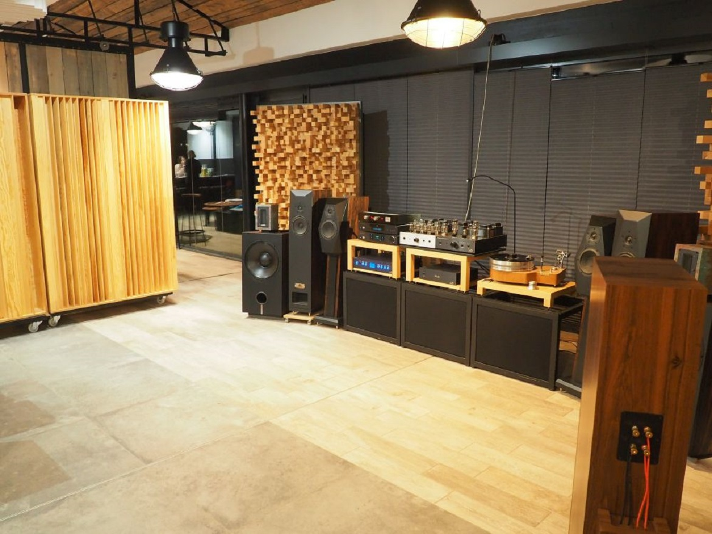
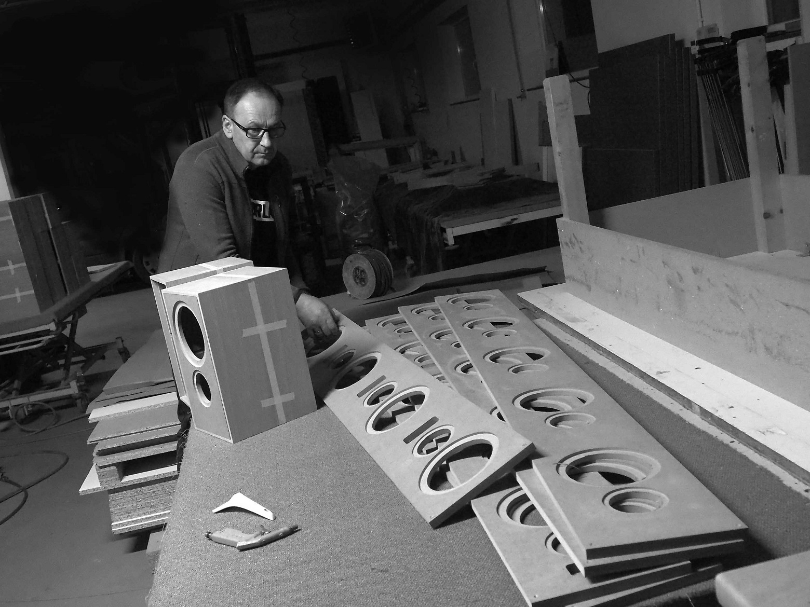
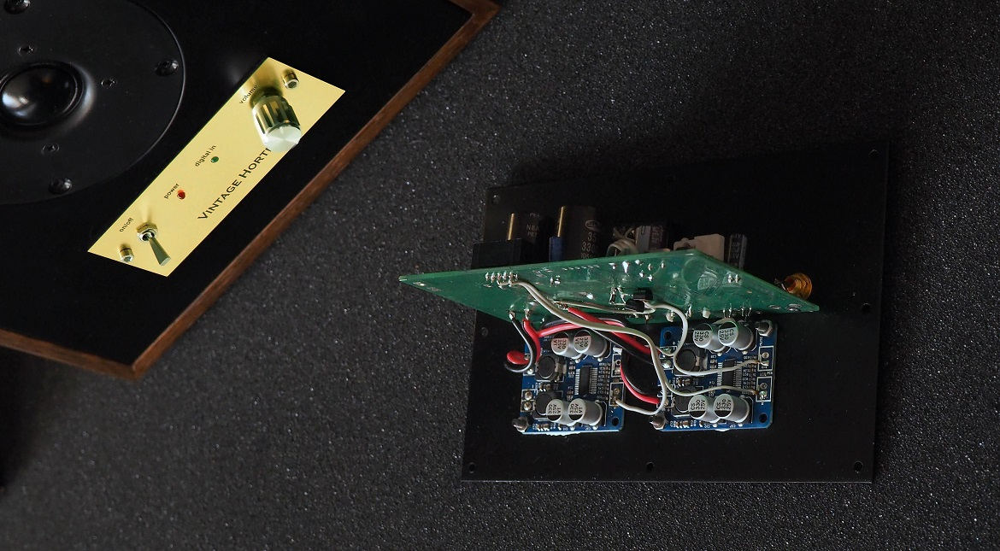
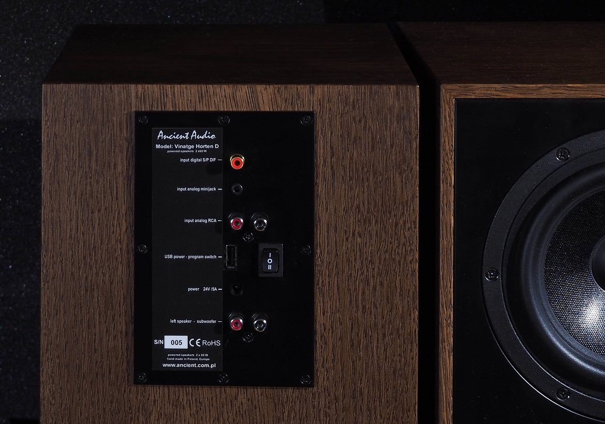
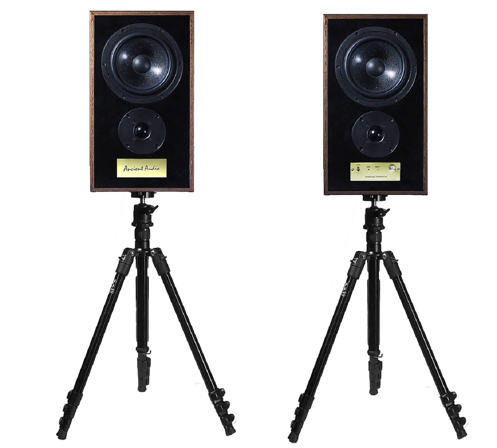
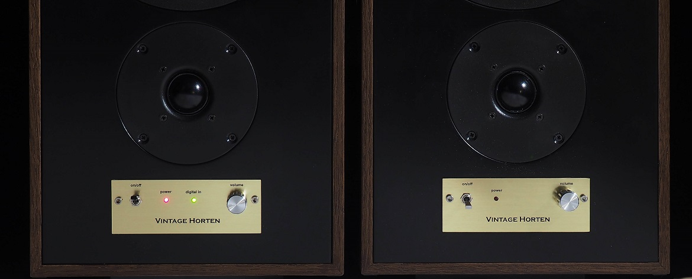

Vintage Horten
Active speakers were curiousity few years ago. They were appreciated in studio use, but home applications were not treating seriously.
However, they became more and more popular De facto there are DAC, Digitial Speaker Processor , Amplifier and Speaker in one box. There are compact, well matched, easy to operate, needs much less space, cables, and of course money, to make good final effect.
So, after sucess of Studio Oslo, Vinatge Oslo, and Frami Midi speakers, Ancient Audio introduced new model, Vinatge Horten.
It is true high quality speaker, uses classic 7" paper woofer, and 1" soft dome tweeter. It reminds classic bookshelf monitor speaker, popular in '60 and '70. This vintage form is classic, reminding the best tradition of audio.
Vintage Horten matches company experience in high end products, and ability to crate well sounding, budget speakers. So, these speakers were created as "budget hi-end ". To give true high-end sound quality, to give well looking product. But by affordable price.
We use quality drivers, made by Polish company STX
Cabinets, makes personally Marek Godyñ, www.godyn.info , in his worksop.
His company has big experience in expencive furniture , and speaker cabinest too, because Marek is music freak as well. Boxes are hand made from MDF, veneered by traditional polish oak.
The heart of Vintage Horten is unique Digital Speaker Processor. It corrects speaker imperfections by unique algorithm.
Processor has three programs to play on desk, in room , and with external subwoofer
Leaving away classic, power hungry and hot in touch class AB amplifiers, it is applied Class D solution with cool running, low power consumption, however still with warm sound signature.
To well control of speakers, there are dual mono power amplifiers.
They can be driven by CD player or RCA sockects, but also by computer by minijack cable. Also, it is possible to easy connect outboard bluetooth receiver.
Digital, coaxial electric input accept any PCM signal , 44- 216 kHz, 16 to 24 bit, is present in Vintage Horten D edition.
It is no input selector, just power switch and volume knob. Operation is very simple, and foolish proof.
Vintage Horten are midsize speakers, what makes them very versatile. The can both play in 40 sq. room, and on desk as well.
The USB socket delivers power to charge phone, or to supply outboard bluetooth receiver ( optional )
Speakers are powered by outboard power supply, as well as optional battery.
To easy place speakers on required place and height, the 1/4" socket is on speakers botton. So, any solid, standard photo camera stand or tripod can be used.
For budget music lovers, we made simplified version, Vintage Horten, with analog inputs only.
